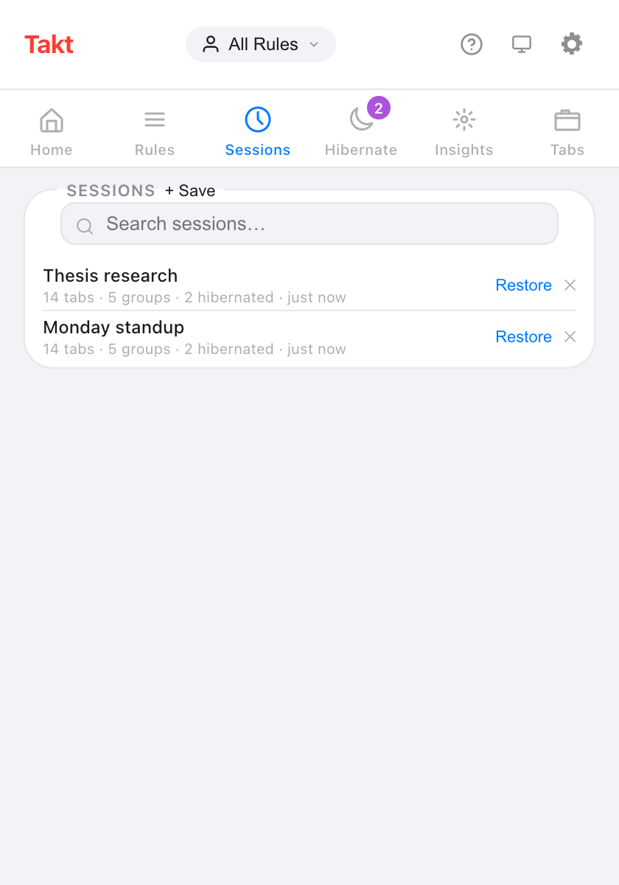
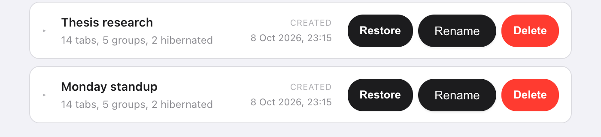

Short answer: in Takt's popup, open Sessions, click + Save, name it, and pick This window or All windows. Click Restore later to get the same tabs back, inside the same named, colored groups.
- Saves every tab, every group (name, color, collapsed state), loose tabs and your Hibernate list.
- Restore into a new window, or replace the current one.
- Up to 50 sessions, stored on your machine. Premium
Why isn't Chrome's "Continue where you left off" enough?
For one job, it is. Turn it on and Chrome reopens the tabs from your last session when it starts. If that's all you need, you don't need an extension.
It breaks down when you switch between pieces of work. Your thesis tabs, your Monday standup tabs and your trip planning can't all be "the last session". Close the thesis window to make room for the standup, and the thesis tabs are gone from that list.
A named session is a bookmark for a whole workspace. You close the window without worrying, because you can bring it back by name.
How do I save a tab session?
- Install Takt from the Chrome Web Store.
- Open the popup and go to the Sessions pane.
- Click + Save and type a name, up to 60 characters. Names must be unique.
- Choose This window (the default) or All windows, then click Save.

What does a session capture?
| Saved | Details |
|---|---|
| Tabs | URL and title of every tab |
| Tab groups | Name, color, collapsed state, and which tabs belong to each |
| Loose tabs | Tabs outside any group |
| Windows | One window, or every normal window with All windows |
| Hibernated tabs | Your Hibernate list, restored to it on restore |
Chrome doesn't let extensions open chrome://, about: or extension pages, so those tabs are skipped.
How do I restore a session?
Click Restore. A dialog offers two modes:
- Open in new window. Your current window stays as it is.
- Replace current window. The saved tabs open in the current window, then the tabs that were there close.
The dialog counts down 7 seconds, then restores with the selected mode. Click Restore in the dialog to skip the wait, or Cancel. In a multi-window session, the first window follows your choice and every other window opens as a new one.
Can I rename sessions or save them automatically?
Yes to both.
- Rename: double-click a name in the popup, or use Rename on the options page Sessions tab. Press Enter to save.
- Auto-save: turn on Auto-save on window close in Settings. Closing a window saves its tabs as a session named "Auto-save" plus the date and time.
The options page also lets you expand a session to see every group and tab inside it before you restore.

Takt sessions vs Chrome's built-in options
| Chrome "Continue where you left off" | Takt sessions | |
|---|---|---|
| How many | The last session | Up to 50, named |
| What it keeps | The tabs you had open last time | Any snapshot you saved, or an auto-save when a window closes |
| When it restores | When Chrome starts | Whenever you click Restore |
| Cost | Free, built in | Premium |
What sessions don't do
- They stay on this computer. Sessions live in Chrome's local storage and don't follow your Google account. To move them, use a backup or sync.
- They are snapshots. A saved session doesn't change when you change the window. Save again under a new name to keep a newer version.
- 50 is the cap. Delete old ones to make room. Auto-saves replace the oldest auto-save, never a session you named.
- No page state. Restoring reopens the URLs. Form contents and scroll positions are not saved.
Close the window. Keep the work.
Add Takt to Chrome, freeFAQ
Does Chrome save tab sessions on its own?
"Continue where you left off" reopens your last session when Chrome starts. It keeps that one session, not a list of named snapshots.
How many sessions can I save in Takt?
Up to 50. When the list is full, delete an older session first. Auto-saves make room by replacing the oldest auto-save.
Are tab sessions free in Takt?
No. Saving, restoring, renaming and auto-saving are Premium ($3/month or $30/year). On the free plan you can see the saved list.
Are my sessions uploaded anywhere?
No. They're stored in Chrome's local storage on your computer. They leave it only if you export a backup or turn on File Sync or Drive Sync. See how Takt keeps data local.